Takes a fitted gam object, converted using getViz, and produces QQ plots of its residuals (conditional on the fitted model coefficients and scale parameter). If the model distributional assumptions are met then usually these plots should be close to a straight line (although discrete data can yield marked random departures from this line).
# S3 method for gamViz qq(o, rep = 10, level = 0.8, method = "auto", type = "auto", CI = "none", worm = FALSE, showReps = FALSE, sortFun = NULL, discrete = NULL, ngr = 1000, xlim = NULL, ylim = NULL, a.qqpoi = list(), a.ablin = list(), a.cipoly = list(), a.replin = list(), ...)
| o | an object of class |
|---|---|
| rep | how many replicate datasets to generate to simulate quantiles of the residual distribution.
Relevant only if |
| level | the level of the confidence intervals (e.g. 0.9 means 90% intervals). |
| method | the method used to calculate the QQ-plot and, possibly, the confidence intervals. If set
to ( |
| type | the type of residuals to be used. See residuals.gamViz. |
| CI | the type of confidence intervals to be plotted. If set to |
| worm | if |
| showReps | if |
| sortFun | the function to be used for sorting the residuals. If left to |
| discrete | if |
| ngr | number of bins to be used in the discretization. |
| xlim | if supplied then this pair of numbers are used as the x limits for the plot. |
| ylim | if supplied then this pair of numbers are used as the y limits for the plot. |
| a.qqpoi | list of arguments to be passed to |
| a.ablin | list of arguments to be passed to |
| a.cipoly | list of arguments to be passed to |
| a.replin | list of arguments to be passed to |
| ... | currently unused. |
An object of class c("qqGam", "plotSmooth", "gg").
Here method = "simul1" corresponds to the algorithm described in section 2.1 of Augustin et al. (2012), which
involves direct simulations of residuals from the models. This requires o$family$rd to be defined.
Setting method = "simul2" results in a cheaper method, described in section 2.2 of Augustin et al. (2012),
which requires o$family$qf to be defined.
Augustin, N.H., Sauleau, E.A. and Wood, S.N., 2012. On quantile quantile plots for generalized linear models. Computational Statistics & Data Analysis, 56(8), pp.2404-2409.
######## Example: simulate binomial data library(mgcViz) set.seed(0) n.samp <- 400 dat <- gamSim(1,n = n.samp, dist = "binary", scale = .33)#> Gu & Wahba 4 term additive modelp <- binomial()$linkinv(dat$f) ## binomial p n <- sample(c(1, 3), n.samp, replace = TRUE) ## binomial n dat$y <- rbinom(n, n, p) dat$n <- n lr.fit <- gam(y/n ~ s(x0) + s(x1) + s(x2) + s(x3) , family = binomial, data = dat, weights = n, method = "REML") lr.fit <- getViz(lr.fit) # Quick QQ-plot of deviance residuals qq(lr.fit, method = "simul2")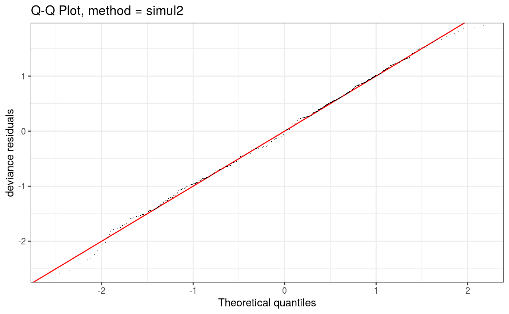# Same, but changing points share and type of reference list qq(lr.fit, method = "simul2", a.qqpoi = list("shape" = 1), a.ablin = list("linetype" = 2))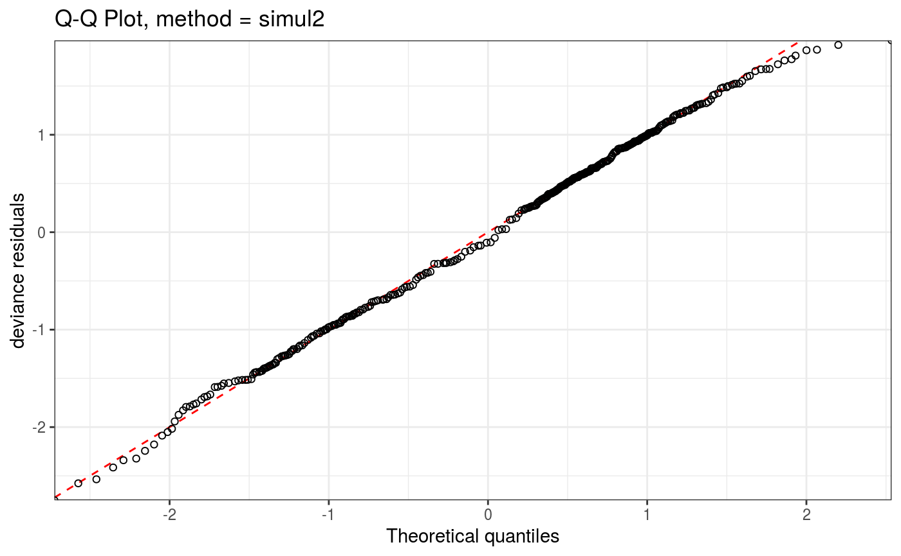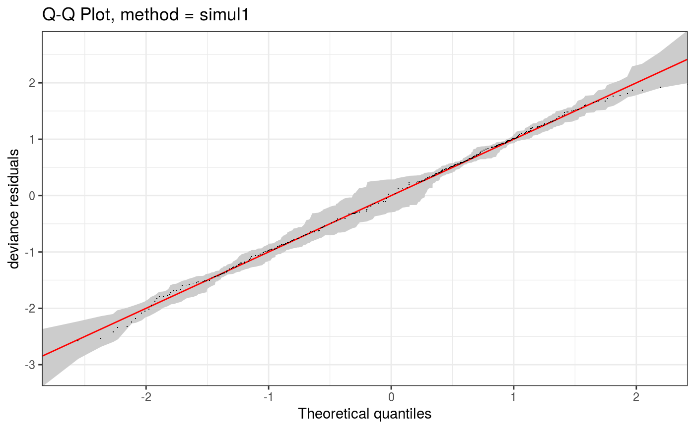# Simulation based QQ-plot, Pearson resids, all simulations lines shown qq(lr.fit, rep = 100, CI = "none", showReps = TRUE, type = "pearson", a.qqpoi = list(shape=19, size = 0.5))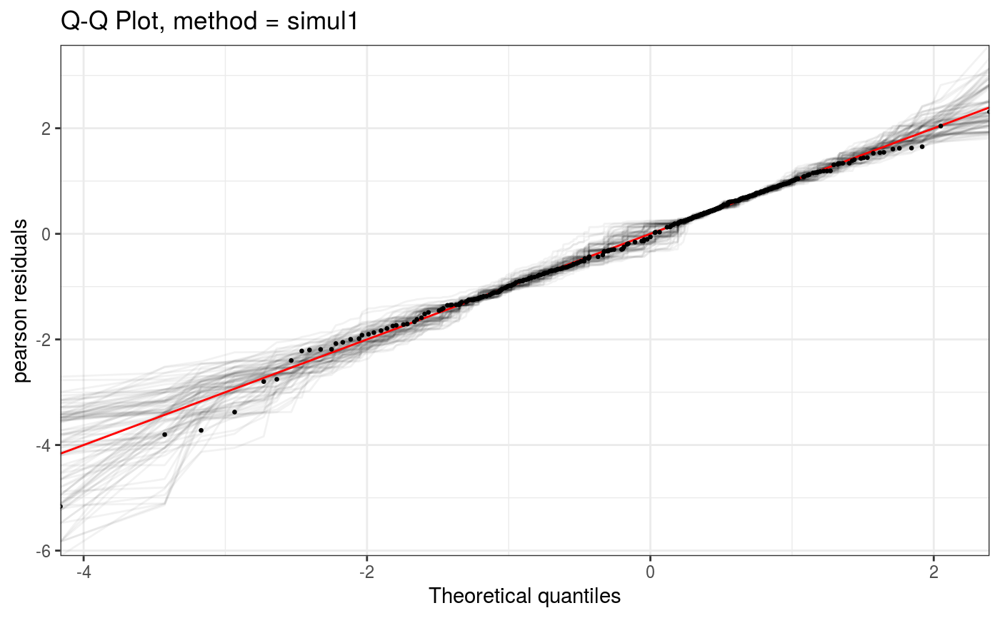### Now fit the wrong model and check pif <- gam(y ~ s(x0) + s(x1) + s(x2) + s(x3) , family = poisson, data = dat, method = "REML") pif <- getViz(pif) qq(pif, method = "simul2")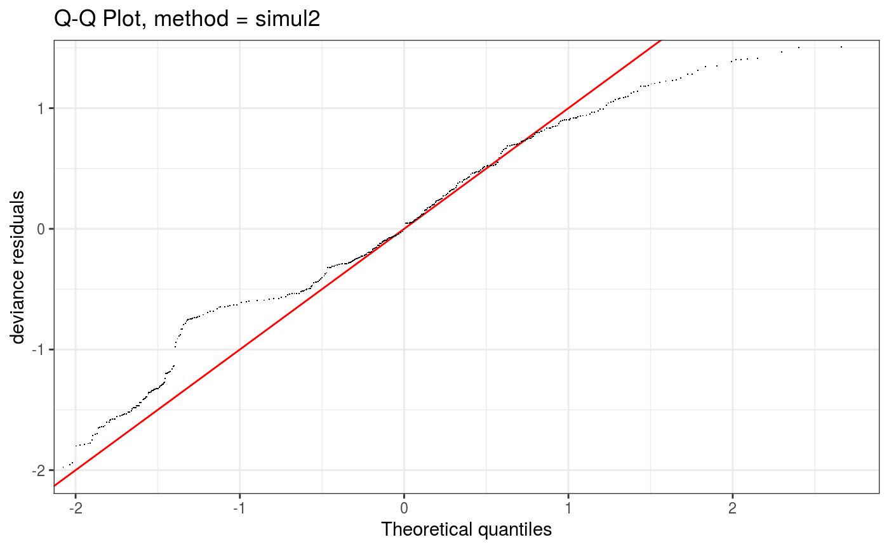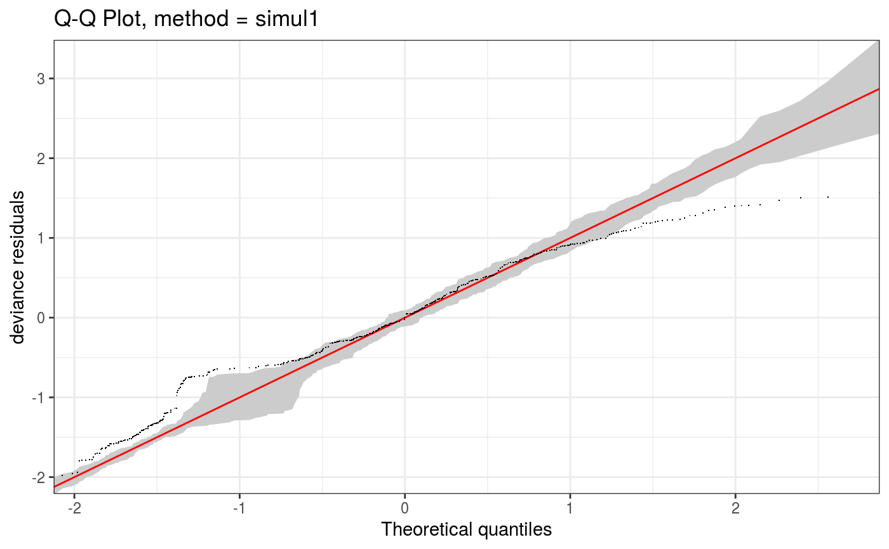qq(pif, rep = 100, type = "pearson", CI = "none", showReps = TRUE, a.qqpoi = list(shape=19, size = 0.5))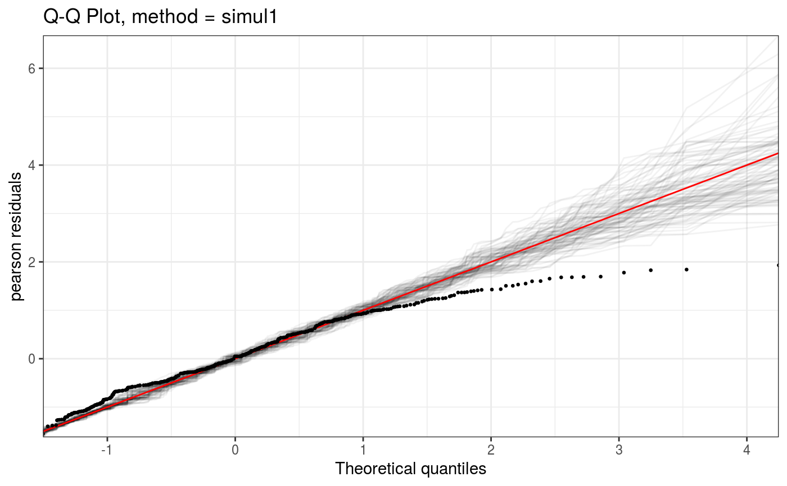######## Example: binary data model violation so gross that you see a problem ######## on the QQ plot y <- c(rep(1, 10), rep(0, 20), rep(1, 40), rep(0, 10), rep(1, 40), rep(0, 40)) x <- 1:160 b <- glm(y ~ x, family = binomial) class(b) <- c("gamViz", class(b)) # Tricking qq.gamViz to use it on a glm # Note that the next two are not necessarily similar under gross # model violation... qq(b, method = "simul2")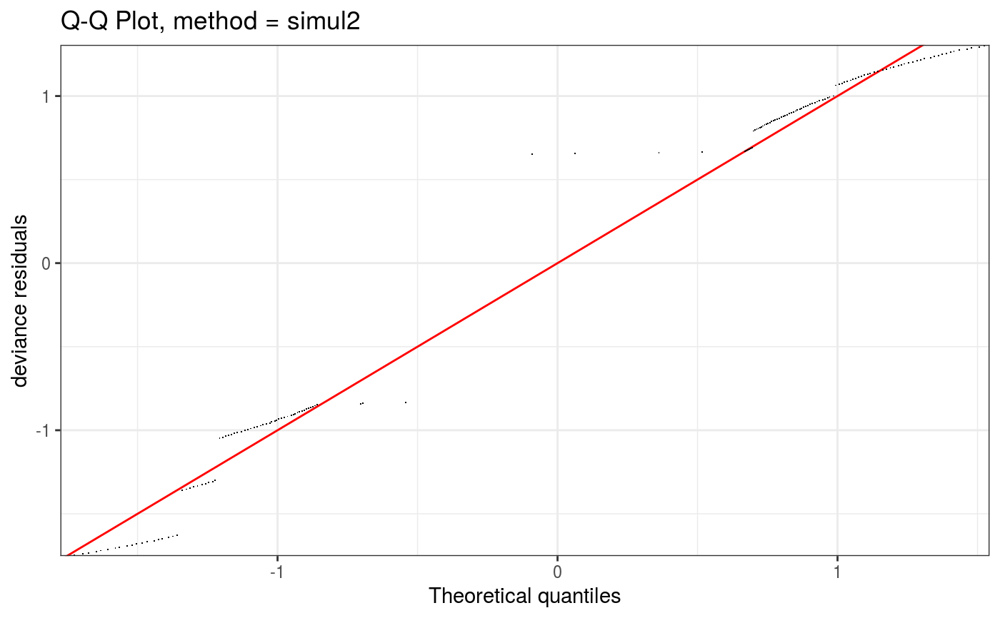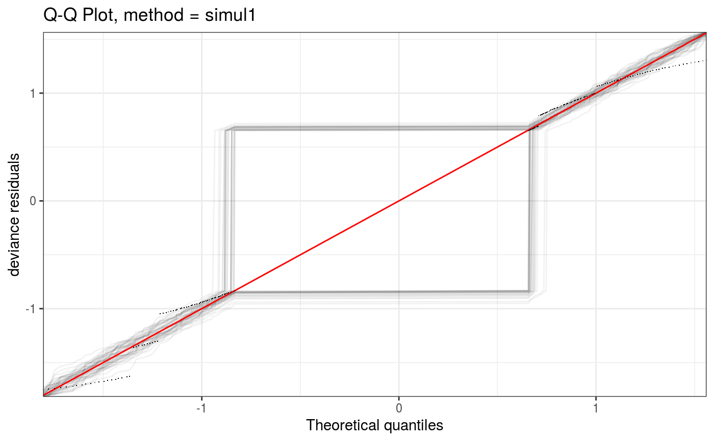### alternative model b <- gam(y ~ s(x, k = 5), family = binomial, method = "ML") b <- getViz(b) qq(b, method = "simul2")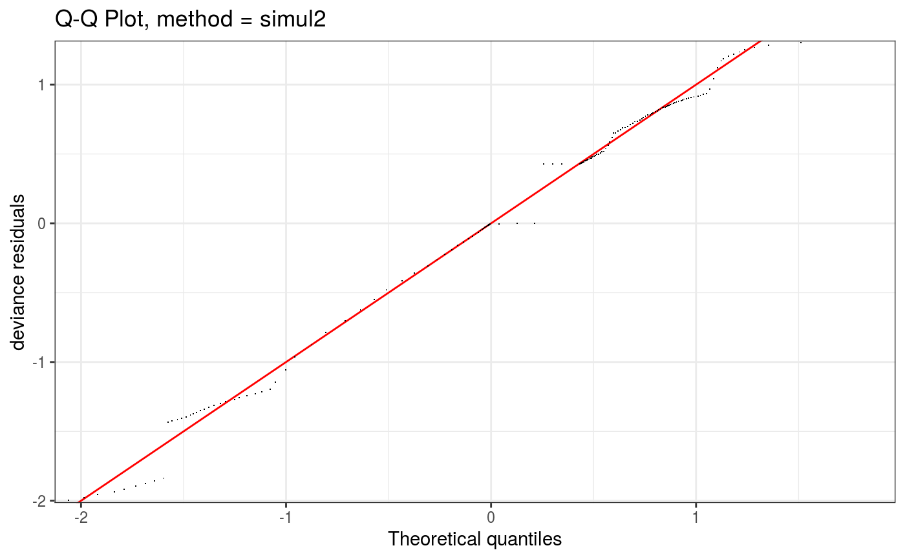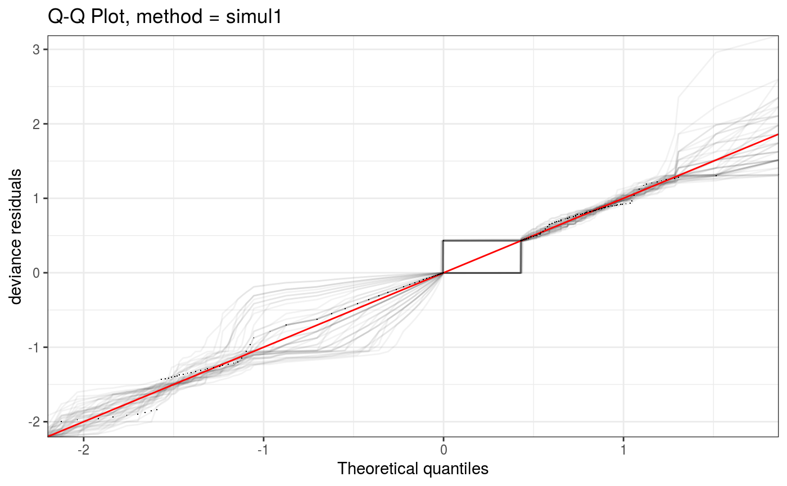# NOT RUN { ######## "Big Data" example: set.seed(0) n.samp <- 50000 dat <- gamSim(1,n=n.samp,dist="binary",scale=.33) p <- binomial()$linkinv(dat$f) ## binomial p n <- sample(c(1,3),n.samp,replace=TRUE) ## binomial n dat$y <- rbinom(n,n,p) dat$n <- n lr.fit <- bam(y/n ~ s(x0) + s(x1) + s(x2) + s(x3) , family = binomial, data = dat, weights = n, method = "fREML", discrete = TRUE) lr.fit <- getViz(lr.fit) # Turning discretization off (on by default for large datasets). set.seed(414) # Setting the seed because qq.gamViz is doing simulations o <- qq(lr.fit, rep = 10, method = "simul1", CI = "normal", showReps = TRUE, discrete = F, a.replin = list(alpha = 0.1)) o # This might take some time! # Using default discretization set.seed(414) o <- qq(lr.fit, rep = 10, method = "simul1", CI = "normal", showReps = TRUE, a.replin = list(alpha = 0.1)) o # Much faster plotting! # Very coarse discretization set.seed(414) o <- qq(lr.fit, rep = 10, method = "simul1", CI = "normal", showReps = TRUE, ngr = 1e2, a.replin = list(alpha = 0.1), a.qqpoi = list(shape = 19)) o # We can also zoom in at no extra costs (most work already done by qq.gamViz) zoom(o, xlim = c(-0.25, 0.25), showReps = TRUE, discrete = TRUE, a.replin = list(alpha = 0.2)) # }